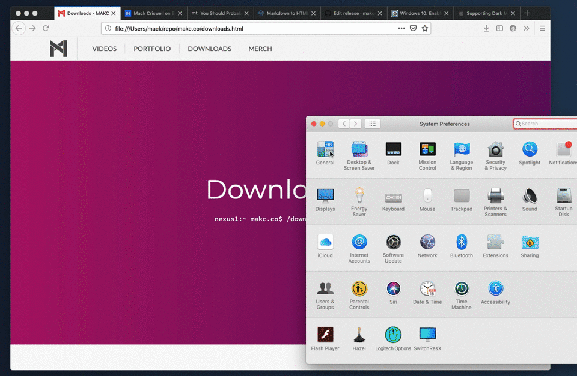

I couldn't exactly tell you why, but I care a great deal about the progress of dark modes modern software platforms. But I kind of always have hated the way that this feature is baked into software and websites. Almost always, you open a new app, or website; and at some point you realize you'd like to go into dark mode; so you fish around in the settings and menus looking for a button to do just that for you; or maybe you even get desperate and just Google the answer— the point is it's a frustrating process. Every app, every web site, ever OS has a manual button that you, the user, have to go and track down if you're interested. Of course that's just the process for enabling the dark mode, turning it back off it equally annoying.
Now, Apple actually did make a really great move back with the release ofMacOS Whatever It Was, when they first implemented a system wide dark mode. They baked in one button that would change the theming for every system app and every little piece of UI (with a few tiny exceptions). Then Apple did the really smart thing buy giving developers a quick and easy way to sort of tap into that theme switching within their apps (and seriously, it actually is really easy, I've only ever used Xcode in short spurts, working on iOS apps, and feel confident after reading the Documentation that I could get this working). Then, after a little delay Apple also handed this feature over to web developers. If you're interested you can build a website that will follow the system wide theme without any need to reload the page, or enable any weird features, it just works.
Now the biggest issue with this feature is that for it to just work, a lot of conditions have to be met. You have to be on a supported operating system (spoiler that means just MacOS), using a supported browser (for the longest time that was just Safari), and actually be a user who was running the latest software, and taking advantage of the new dark mode feature. Any yet, when it did work, this was, dare I say it, the absolute best implementation of any dark mode; no need to fish around for settings, no need to even care to pay attention to what was going on, if your'e the end user, it just worked.
But now, a little over a year later, this functionality is becoming quite a bit more widely supported. The biggest sign of this is that both a new, system wide dark mode, as well as support for websites following the system dark mode is being added to the upcoming iOS 13; but that's far from the only additional support. Mozilla added this functionality to Firefox relatively recently. Google Chrome still doesn't actually support this theme switching in their official release of the browser but, both Chromium and Chrome Canary support this feature in their most recent updates; so I've got to assume that this is coming to Chrome at some point in the near future. This really kind of leaves is up to Microsoft, who's Windows 10 does also now have a system wide dark mode, to either develop a similar system for web developers, or just join in with Apple; and the vast majority of web users will be able to get the most no-nonsense Dark Mode the world has ever known. (I'm not ignoring Android and Linux users, I just think that Android will almost certainly implement this feature soon, and there are way to many Linux distributions for me to keep track of but most of them use Firefox or Chrome anyway)
But for now we're stuck in a relative corner where our new, amazing, dark mode, only works in a few places. So the way I see it, there are two options:
- Go ahead and enable a dark mode the old fashioned way with a button and a bit of Java Script. This isn't as terrible a solution as it may seem, you can actually enable both the manual dark mode with JS, and the automatic with media queries, and that will work fine.
- The second option is basically to rely 100% on Apple's solution, and then just serve up a very specific version of your website on the platforms that don't support theme switching.
I'm actually going with the second option for now, while working on the redesign of my personal website. I might end up actually adding a manual dark mode switcher, button thing, before it's live, but at least for now, I'm kind of happy with the way that things work now. The way that I have this set up is to serve, by default, not the standard light mode of my site, but the dark mode version. Anyone on an unsupported platform will just see the dark version of my site. But when a user moves over to a supported browser, my site will follow the preference set by the OS. Setting this up is fairly straightforward.
The first step is to decide what version of your site you want users to see by default, before you ever start writing it. This is important because whatever classes you set up in your CSS document at the top, will be what users in an unsupported browser will see. So in my case, since I want to serve the dark mode by default I might do something like:
html, body {
background-color: black;
color: white;
}
Then we can use media queries to enable a dark mode, we have a few option here:
@media (prefers-color-scheme: light)
/*will trigger when a user is in light mode*/
@media (prefers-color-scheme: dark)
/*will trigger when a user is in dark mode*/
In my case, I'm wanting to enable a dark mode by default, and then use media queries to enable a light mode, which would look something like this:
@media (prefers-color-scheme: light) {
body, html {
background-color: white;
color: black;
}
}
I actually made a video talking about this same thing which you can watcher here if your'e interested. But the point is, for now at least, I think this is a really great solution for a modern, simple, clean dark mode experience for web users.